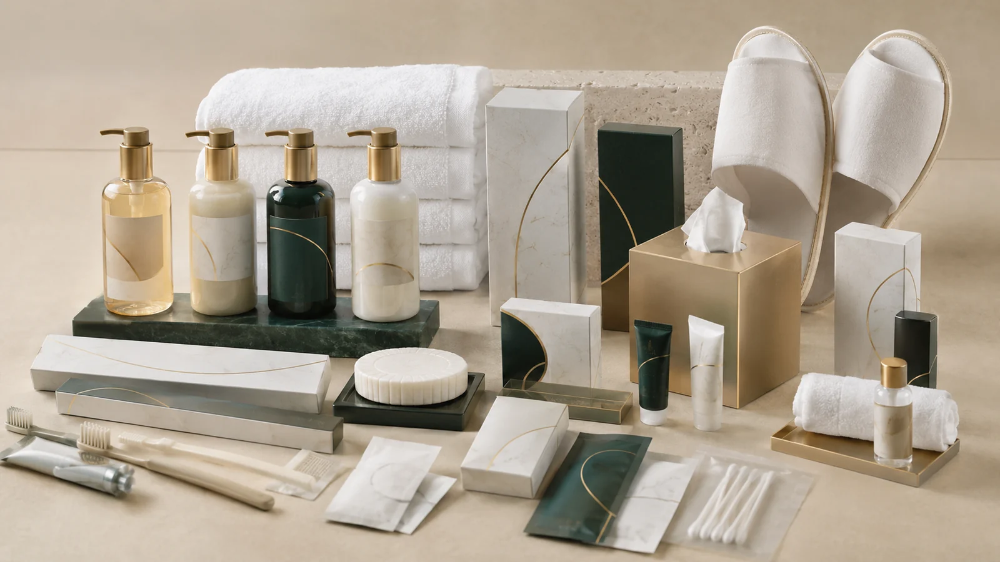
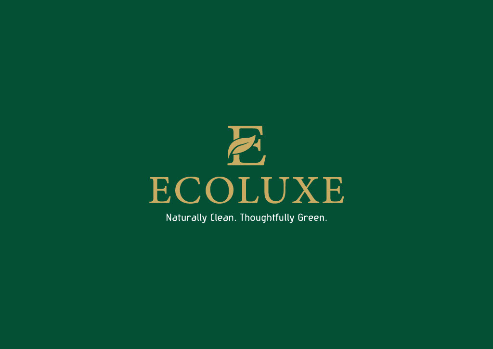
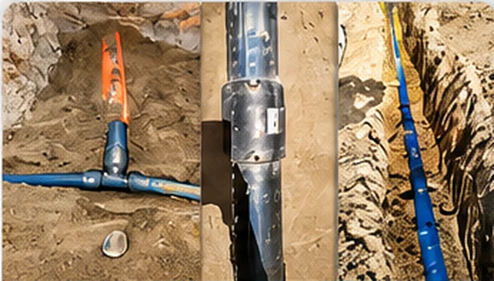
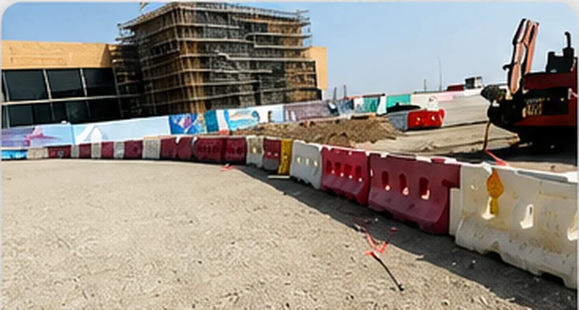
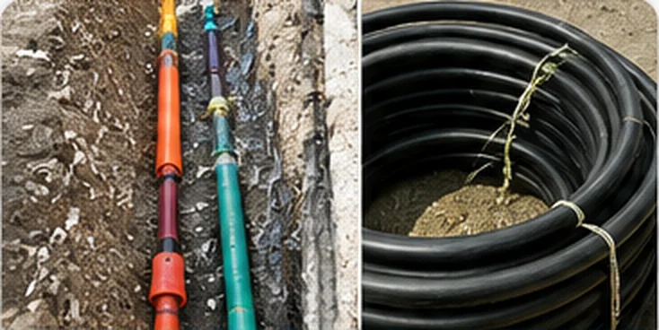

Water Infrastructure
Pipeline installation, house connections, metering, valves, testing and commissioning.
Learn moreAFQ AL ASMAH NATIONAL delivers reliable utility infrastructure and carefully curated hospitality supply solutions through ECOLUXE, its dedicated hospitality brand.
Two clear paths. Select the service that matches your requirement.
Choose this for pipelines, sewage, chambers, treated water, fiber optic, civil utility and site execution works.
Go to InfrastructureChoose this for hotel amenities, linen, OS&E, housekeeping supplies and customized ECOLUXE products.
Go to ECOLUXEAFQ AL ASMAH NATIONAL now presents as a modern regional partner: clear capability, refined visuals, direct department access and a premium ECOLUXE brand story for hospitality clients.
Our multidisciplinary capabilities connect practical on-site execution with responsive commercial supply. From underground utility networks to the guest-room experience, we focus on consistent quality, clear coordination and dependable delivery.
Read our company profile →Pipeline installation, house connections, metering, valves, testing and commissioning.
Learn moreSewer lines, manholes, chamber construction, rehabilitation and reinstatement.
Learn moreDucting, cable laying, jointing, termination, testing and network support.
Learn moreShampoo, body wash, soap, dental kits, vanity kits, slippers and guest essentials.
Learn moreBed, bath and table linen together with hotel operating supplies and equipment.
Learn moreBrand-aligned packaging, product selection and tailored supply programmes.
Learn more

ECOLUXE is the hospitality brand of AFQ AL ASMAH NATIONAL, supporting hotels and resorts with premium amenities, elegant presentation and scalable customized solutions.

HDPE and GI pipeline works for network expansion and utility connections.

Water and sewerage connection support within major development environments.

Ducting, cable works, jointing and testing for telecom networks.